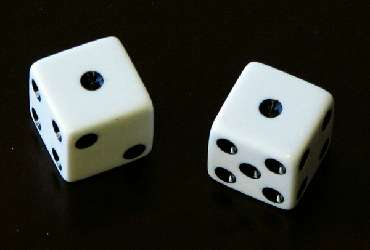

31 ИЮНЯ
НЕ ПРОЙТИ МИМО
Сегодня грустное число.
31 июня 1899 года Фандорин ехал из Санкт-Петербурга в Москву по Николаевской железной дороге. Он путешествовал инкогнито, под чужим именем. На станции Бологое сошел на перрон, чтобы размяться. Мысли Эраста Петровича были печальны. Он думал о том, что никогда не был и, видимо, уже не будет счастлив, ибо настоящее счастье возможно только вдвоем, а когда человек один, никакого тока между полюсами пробежать не может.
Остановился и встречный, московский поезд. По лесенке спустилась монахиня в черном, низко надвинутом плате. Глаза из-под круглых очков смотрели рассеянно. Сестра Пелагия следовала в столицу, везла в Синод важное донесение от владыки Митрофания, которое должна была дополнить устным сообщением, однако размышляла монахиня не о церковных делах, а о земных, трепетных. Что ж, думала Пелагия, у каждого своя судьба и сетовать на нее стыдно. Если не встретила того, про кого сразу понимаешь: вот он, а всё остальное неважно, значит, так тому и быть. И вообще: небесная любовь превыше земной.
В этот миг она увидела высокого господина в сером кепи и пепельной крылатке, медленно движущегося по соседнему перрону ей навстречу, и отчего-то сжалось сердце.
Фандорин, смотревший в небо, вдруг ощутил странное побуждение повернуть голову вправо. Посмотрел на сюртуки, дамские шляпки и задержал взгляд на узкой, черной фигуре. Монахиня? Путешествует одна? Как необычно. И есть что-то интригующее, необычное в посадке головы, деликатности движений. Какая-то тайна. До отправления четверть часа. Не перейти ли на ту сторону, не вступить ли в разговор?
Но по пути между двумя платформами с лязгом загрохотал товарный состав. Пелагия тряхнула головой, прошептала «глупости!» и пошла дальше. А Эраст Петрович нахмурился — на его белый манжет села крупица угольной пыли. Лучше было вернуться в вагон.
Такой уж это опасный день. Можно пройти мимо своего счастья, мимо своей судьбы и даже об этом не догадаться. Хорошо, что 31 июня бывает нечасто.